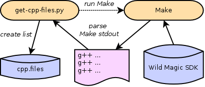
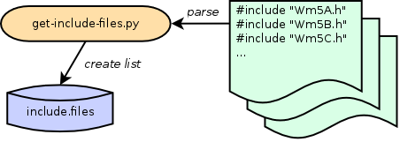
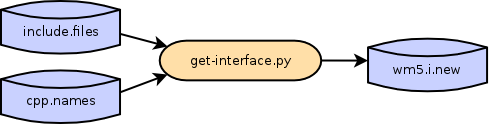

The interface files needed by SWIG to create the Python module are included in the wrapper distribution:
- wm5.i
- special.i
The bulk of C++ declarations and SWIG directives are in wm5.i, the main interface file. Additional SWIG directives are in file special.i which gets included by wm5.i.
Although wm5.i is packaged as part of the wrapper source code, you can easily generate it from scratch using programs in the tools/ directory. Before you begin, you will need to run the first two steps of code analysis. After generating data in analysis/ directory, proceed with the steps below. Note that, to keep things organized, intermediate files created in the steps below are added to the analysis/ directory.
SWIG expects to see C++ declarations in a dependency order. We’ll generate this list by first ordering all definition (.cpp) files, and then by following the inclusion path (#include statements) we’ll create a list of declaration (.h) files. Program get-cpp-files.py lists definition files in the order of original compilation of the libraries. Basically, it runs Make on the Wild Magic source tree in “dry-run” mode, and captures names of compiled files.
From the top of the source tree, create the list and save it in analysis/ directory (note the use of the Make command as the second argument–it should be the same as that used during installation of Wild Magic):
tools/get-cpp-files.py $WM5_PATH 'make -j8 CFG=Release -f makefile.wm5' > analysis/cpp.files
Now we’ll create the list of declaration files. Program get-include-files.py parses definition files from the previous step, and follows the path of inclusion of any library header files.
Run the following to generate the list, saving it in analysis/ directory:
tools/get-include-files.py $WM5_PATH analysis/cpp.files > analysis/include.files
Finally, use program get-interface.py to assemble the interface file.
tools/get-interface.py analysis/include.files analysis/cpp.names > wm5.i.new
Congratulations! You’ve created the SWIG input file used for building the Python extension. Compare it with the distribution wm5.i file–they should be identical:
diff wm5.i wm5.i.new